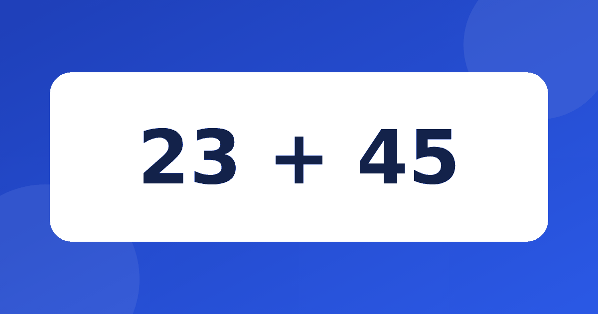

Двузначные числа без столбика: понятные приёмы для второклассника

Во втором классе привычные примеры в пределах двадцати сменяются двузначными числами, и многие дети теряются. Они помнят, что нужно записывать в столбик, но на уроке и в жизни хочется считать в голове. Сложение в уме 2 класс обычно строится на трёх идеях, которые можно показать на простых примерах и потом спокойно закрепить.
Подготовка: что должен знать ребёнок
Прежде чем переходить к двузначным числам, проверьте базу. Ребёнок должен уверенно складывать в пределах двадцати, знать пары до десяти и понимать, что в числе 47 четыре десятка и семь единиц. Если с разрядами возникают сомнения, сначала прочитайте статью про десятки и единицы. Лучше потратить время на повторение, чем решать сложные примеры вслепую.
Как складывать в уме: три приёма
Вопрос, как складывать в уме двузначные числа, имеет не один ответ. Ребёнку полезно знать несколько способов и выбирать удобный под конкретный пример. Рассмотрим три основных.
- По разрядам. Складываем десятки с десятками, единицы с единицами.
- По частям. Прибавляем к первому числу сначала десятки второго, потом его единицы.
- Через круглое число. Округляем одно слагаемое, а затем возвращаем лишнее.
Приём по разрядам
Самый простой случай, когда единицы в сумме не дают нового десятка. Возьмём 34 + 25. Десятки дают 30 + 20 = 50, единицы дают 4 + 5 = 9, а вместе получается 59. Ребёнок может проговаривать вслух, пока не привыкнет.
Чуть сложнее, когда единицы дают больше десяти. Для примера 57 + 36 складываем десятки и получаем 80, затем единицы 7 + 6 = 13, а в сумме 80 + 13 = 93. Здесь пригодится умение переходить через десяток. Если оно хромает, поможет статья про сложение с переходом.
Приём по частям и через круглое число
Сложение двузначных чисел в уме удобно начинать с метода по частям. Пример 36 + 47. Сначала прибавляем сорок, получаем 76, потом прибавляем семь и приходим к 83. Мы нигде не держали в голове два числа сразу, только текущий результат, и в этом главное достоинство метода.
Иногда быстрее обойтись круглым числом. Для 59 + 24 удобно взять 60, ведь на единицу больше, и сложить 60 + 24 = 84, а потом вычесть лишний один и получить 83. Для 48 + 27 сначала добавим два к сорока восьми и получим 50, а у двадцати семи заберём эти два и получим 25. Тогда 50 + 25 = 75.
Выбирайте приём по числам. Если одно слагаемое почти круглое, например 49 или 58, берите округление. Если единицы небольшие, хорошо идти по разрядам. Если числа обычные, пригодится способ по частям.
Типичные ошибки второклассников
Самая частая ошибка состоит в том, что ребёнок складывает десятки и единицы по отдельности, но забывает про лишний десяток. Для 38 + 25 он получает 50 и 13, а потом называет 513. Здесь поможет привычка записывать промежуточные числа и затем складывать их ещё раз: 50 + 13 = 63.
Вторая ошибка связана с потерей числа по дороге. Ребёнок прибавил сорок, ушёл вперёд и забыл, что осталось прибавить семь. Подсказка простая: пусть повторяет вслух, что уже сделано и что ещё осталось. Через какое-то время проговаривание станет внутренним.
Третья ошибка появляется при округлении. Ребёнок прибавляет лишнее, но забывает его вычесть. Договоритесь, что после округления всегда звучит фраза «а теперь верну лишнее». Такая привычка проверяется на любых примерах, например для 49 + 36 берём 50, получаем 86, возвращаем один и приходим к 85.
Как тренироваться дома
Лучше всего работают короткие регулярные занятия. Хватит нескольких примеров в день, но с обязательным проговариванием шагов. Просите ребёнка объяснить, что он делал: так вы увидите, где у него возникает затруднение. Если шаги теряются, нарисуйте их на числовой ленте с прыжками по десяткам.
Хорошо помогает игра в обмен ролями. Вы называете пример, например 45 + 28, а ребёнок выбирает, каким приёмом будет решать, и объясняет почему. Потом он придумывает пример для вас и проверяет ваш ответ. Если у вас получилось 73, а он нашёл ошибку, это повод вместе порадоваться, а не огорчаться. Так ребёнок видит, что способов несколько и ошибаться может каждый.
Для практики пригодится тренажёр «Устный счёт»: в нём есть модуль сложения через десяток, числовая лента с наглядными шагами и повторение трудных примеров. Пока ребёнок привыкает к приёмам, не требуйте скорости. О том, сколько времени отводить на занятия, прочитайте в статье сколько заниматься в день, а как сохранить интерес, подскажет материал про интерес к математике.